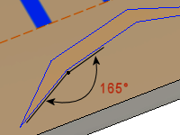
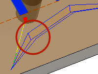

Angle aigu défini sur 160
''Aucun coin n'est coupé''
L'opération de gravure en creux permet de créer des angles aigus dans la poche en déplaçant l'outil de coupe le long de l'intersection des coins. Si l'angle entre les arêtes est supérieur à cette valeur, aucun mouvement de nettoyage des coins ne sera effectué.
 |
Angle de la pièce défini sur 165 |
|
Angle aigu défini sur 160 |
 |
Angle aigu défini sur 168 |